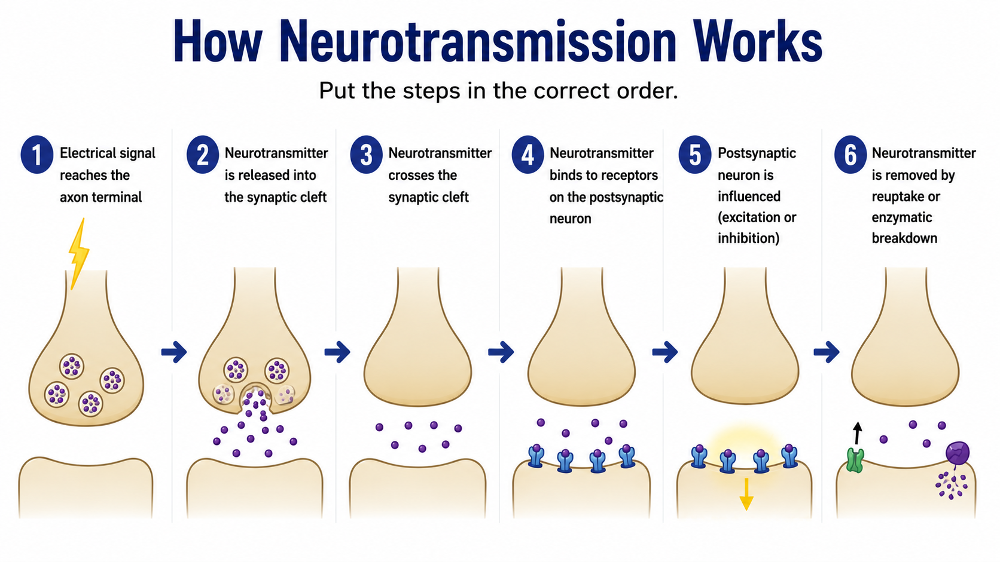

An overview of how psychology examines health, mental health, and well-being.
The IB Psychology Health & Well-being context has three main areas:
Understanding psychological disorders through biological, cognitive, and environmental explanations. For this course: Major Depressive Disorder (MDD).
Understanding factors influencing health-related behaviour. For this course: Social Media Addiction / Problematic Social-Media Use.
Evidence-based strategies for treating mental health disorders and preventing or managing health problems.
Psychology examines health using multiple perspectives:
No single perspective explains every aspect of health. Psychologists often combine evidence from different perspectives to develop a fuller understanding.
A teenager has stopped seeing friends, sleeps 12 hours a day, and says “nothing matters anymore.” For each explanation below, decide which psychological perspective it represents.
“She has a family history of depression and low serotonin levels.”
What MDD is, why it matters, and why it is more than ordinary sadness.
Major Depressive Disorder (MDD) is a clinical condition characterised by persistent low mood and/or loss of interest or pleasure (anhedonia) that interferes with daily functioning.
A diagnosis generally requires five or more symptoms during the same two-week period, including either depressed mood or loss of interest/pleasure, and the symptoms must cause significant distress or difficulty in everyday functioning.
Sadness is a normal human emotion, whereas MDD is a disorder involving a persistent and impairing pattern of symptoms.
People diagnosed with the same disorder may show very different symptom profiles. Recognising symptoms helps us identify MDD, but psychologists also want to understand the mechanisms that may explain why depression develops and persists.
Sort each characteristic into the correct category.
How depression is identified and measured — and the challenges psychologists face when turning symptoms into data and diagnoses.
Depression cannot be measured directly like height or temperature. Psychologists and clinicians therefore measure indicators of depression, such as reported symptoms, how frequently they occur, their severity, and their effect on everyday functioning.
IB Connection — Measurement
Measurement is the process of turning a psychological construct into something that can be recorded or quantified.
Major Depressive Disorder (MDD) is identified through clinical assessment. There is currently no single biological test that can diagnose MDD.
A clinician talks with the individual about their symptoms, how long they have lasted, their severity, their impact on everyday functioning, previous episodes, and other relevant information.
Clinicians use standardized diagnostic systems to guide their assessment:
These systems provide standardized criteria that clinicians can use when assessing whether a person's symptoms fit a recognized disorder such as MDD.
Self-report measures ask people standardized questions about their own symptoms. Their responses can then be recorded and scored. Two widely used measures are the Patient Health Questionnaire-9 (PHQ-9) and the Beck Depression Inventory-II (BDI-II).
Clinicians also consider:
MEASUREMENT ≠ DIAGNOSIS
A questionnaire can measure reported depressive symptoms and contribute evidence to an assessment. A questionnaire score by itself is not the same thing as a clinical diagnosis.
The PHQ-9 is a real psychological questionnaire. Explore how its questions and response scale turn reported experiences into numerical data. The purpose here is to understand psychological measurement, not to diagnose yourself or anyone else.
The BDI-II uses a different approach from the PHQ-9. Instead of asking about frequency, each item presents four statements representing increasing levels of symptom severity. Select the statement that best describes how you have been feeling during the last two weeks, including today.
Commit to an answer before revealing the explanation.
SAME SCORE ≠ SAME SYMPTOM PROFILE
SAME SCORE ≠ SAME CAUSE
SAME SCORE ≠ SAME TREATMENT NEEDS
IB Connection — Measurement & Individual Differences
The same measurement output can result from different combinations of reported symptoms. Measurement records an indirect indicator, and individual differences mean identical scores do not necessarily imply identical symptom profiles, causes or treatment needs.
Reliability asks whether psychological measurement produces reasonably consistent results.
Consider this question: If the same person were assessed again, or if different clinicians assessed the same person, would the result be similar?
In the DSM-5 field-trial conditions examined by Regier et al. (2013), MDD showed relatively low test-retest diagnostic agreement, with a pooled kappa of approximately 0.28, which the researchers classified as questionable reliability.
Kappa is not a percentage-agreement statistic. A kappa of 0.28 does not mean that clinicians agreed only 28% of the time; it indexes agreement beyond what would be expected by chance.
This provides evidence that standardized diagnostic criteria do not guarantee perfect agreement between assessments. Reliability can also depend on the assessment procedure, sample, clinicians and context.
STANDARDIZATION → can improve consistency
STANDARDIZATION ≠ perfect reliability
IB Connection — Reliability
Reliability concerns the consistency of psychological measurement or diagnosis.
Validity asks whether the interpretation made from a psychological measure or diagnosis is justified — particularly whether it adequately represents the construct it is intended to assess. Keeping “accuracy” in mind is fine as a simple memory aid, but HL answers need this fuller definition.
A questionnaire may reliably produce a score, but researchers must still ask whether that score validly represents the depressive symptoms or construct they want to measure.
Imagine someone reports sleep problems, exhaustion, difficulty concentrating, and appetite changes. A depression questionnaire produces a high symptom score. Does this automatically prove that depression is causing those symptoms?
Reliability
Is the measurement reasonably consistent?
Validity
Does the evidence justify the interpretation we are making from the measurement?
Standardized criteria and questionnaires can reduce subjectivity, but they cannot automatically eliminate bias.
People from different cultural backgrounds may describe, interpret, or express psychological distress differently. This can influence whether symptoms are recognized as depression.
Social expectations surrounding gender may influence how symptoms are reported or interpreted.
A clinician's assumptions or expectations can potentially influence how information is interpreted.
Standardization can reduce subjectivity, but symptoms still have to be reported and interpreted by people. Psychological measurement and diagnosis can therefore still be influenced by context and bias.
IB Connection — Bias
Bias refers to systematic distortion that can affect how research is conducted, interpreted, or applied.
Identify problems in how depression is diagnosed.
How genes, brain processes, and chemical messengers may increase vulnerability to depression.
Biological explanations focus on how genetic inheritance, brain processes, and chemical messengers may make some people more vulnerable to Major Depressive Disorder (MDD) than others. Importantly, biological factors can increase risk without determining whether depression develops.
Research consistently shows that depression has a heritable component. Having a close relative with depression increases the likelihood of developing the disorder yourself.
The research question: Depression runs in families — but is that because families share genes or because they share environments? McGuffin’s team used twins to separate the two.
Why this matters methodologically: structured interviews + blind consensus diagnosis mean the diagnoses were not influenced by knowing the study’s purpose or the twin’s type.
The chain of reasoning to reproduce: MZ rate (46%) > DZ rate (20%) → greater genetic overlap tracks greater disorder overlap → supports genetic vulnerability as part of a biological explanation. But 46% < 100% → inheritance is not destiny → a complete biological explanation frames genes as raising probability, which is why modern accounts combine them with environmental triggers.
One key limitation to carry into evaluation: the twin method rests on the equal-environments assumption — that MZ and DZ pairs experience equally similar environments. If identical twins are treated more alike (same friends, same room, dressed alike), their higher concordance could partly reflect shared environment rather than shared genes. Volunteer sampling via registers also raises generalisability questions.
Decide what each claim is allowed to conclude. No peeking back until you have committed to an answer.
No single “depression gene” has been identified. Depression is polygenic — influenced by many genetic variants rather than one single gene, with each variant contributing a small amount of risk.
Genome-Wide Association Studies (GWAS) compare genetic variation across very large samples of people with and without depression to identify variants that are statistically associated with depression risk. Many associated variants have been identified, and individual variants generally have very small effects.
IB Connection — Genetics
Twin studies help researchers investigate genetic influences on psychological characteristics. Higher concordance among MZ than DZ twins supports a genetic contribution, while concordance below 100% suggests that genes alone cannot explain MDD.
Researchers use brain-imaging techniques such as functional Magnetic Resonance Imaging (fMRI) to compare patterns of brain activity in people with and without Major Depressive Disorder (MDD). fMRI indirectly measures changes in blood flow associated with neural activity, allowing researchers to identify which brain regions are more or less active during specific tasks or states.
The prefrontal cortex (PFC) contains regions involved in cognitive control, attention, decision-making, and regulation of emotion. Research on depression has found altered functioning in prefrontal networks, including reduced activity in some regions involved in cognitive control and emotion regulation. This provides a possible biological explanation for symptoms such as difficulty concentrating, impaired decision-making, and difficulty regulating persistent negative thoughts and emotions. Importantly, the PFC is not simply “switched off” in depression — different regions may show different patterns of altered activity.
The amygdala helps detect and process emotionally significant information, particularly emotionally salient or threatening stimuli. Depression research has frequently found stronger or prolonged amygdala responses to negative emotional information in people with MDD, which could contribute to the tendency to attend to and respond strongly to negative emotional material. The amygdala is not simply a “fear centre” — it processes a range of emotionally significant stimuli and interacts with other brain regions to shape emotional responses.
The research question: When people with depression look at negative words, do their brains respond differently from healthy brains — and if so, where and how?
Excluding medicated patients mattered: medication changes serotonin systems, which would have contaminated any brain-activity comparison.
Supports: MDD involves measurable differences in emotion-regulation circuitry (heightened limbic reactivity combined with weaker prefrontal control) — objective, physical evidence that depression has neural correlates, strengthening a biological explanation beyond self-report alone.
Limitations to cite: very small samples; cross-sectional design (no cause direction); laboratory word-viewing is artificial compared with real-life emotion.
For each claim, choose the conclusion the evidence actually licenses.
IB Connection — Causality
Causality concerns whether one factor produces change in another. Brain-imaging studies can identify correlations between neural activity and depression, but correlational evidence cannot establish the direction of cause and effect.
Exam Takeaway:
Evidence: MDD is associated with altered functioning in neural systems involved in emotion processing and cognitive control.
Evaluation: association does not establish whether brain differences are a cause or consequence of depression.
Neurotransmitters are chemical messengers used by neurons (nerve cells) to communicate with each other. When a neuron fires, it releases neurotransmitter molecules into the synapse — the small gap between neurons. These molecules then bind to receptors on another neuron and can influence its activity, either encouraging or inhibiting it from firing.
One neurotransmitter that has been extensively investigated in relation to depression is serotonin (5-hydroxytryptamine, 5-HT). Serotonin signalling is involved in several functions relevant to Major Depressive Disorder (MDD), including mood-related processing, sleep, and appetite — all of which are commonly disrupted in depression.
Researchers proposed that reduced activity in monoamine neurotransmitter systems, particularly serotonin, might contribute to depressive symptoms. Monoamines are a group of neurotransmitters that includes serotonin, noradrenaline (norepinephrine), and dopamine. This idea developed into the monoamine hypothesis of depression, which became one of the most influential biological explanations for MDD.
The monoamine hypothesis was later simplified in popular accounts into the idea that depression is caused by a “chemical imbalance” — specifically, having “too little serotonin.” However, depression cannot accurately be explained as simply having low serotonin. Current evidence suggests MDD involves much more complex interactions among neurotransmitter systems, neural circuits, genetics, cognition, and environmental experiences.
Here is a way to understand how neurotransmitters might contribute to depression:
Neurotransmitter system → communication between neurons → functioning of neural networks → psychological processes/behaviour → possible contribution to depressive symptoms
This is a proposed contribution, not a proven single causal pathway.
Genetic evidence: McGuffin et al. (1996) supports genetic vulnerability because MZ concordance was higher than DZ concordance. However, MZ concordance was only about 46%, not 100%, showing that genetic similarity alone cannot determine who develops MDD.
Brain-imaging evidence: Research can identify brain differences associated with MDD, but cannot by itself establish whether those differences caused depression or resulted from it.
Neurotransmitter evidence: Neurotransmitter systems are biologically relevant, but the simple claim that MDD is caused by a single chemical imbalance is inadequate.
Evidence from beyond biology: Stressful life experiences, cognitive processes, and cultural/environmental differences provide additional evidence that a complete explanation cannot rely on biology alone.
The effectiveness of psychological treatments such as Cognitive Behavioural Therapy (CBT) shows that changing cognitive and behavioural processes can reduce depressive symptoms, supporting the importance of explanations beyond a purely biological account.
This raises the next question: what happens when a vulnerability interacts with stressful life experiences?
Next: The Diathesis–Stress Model.
Evaluate the evidence for biological explanations of depression.
How vulnerability and environment interact to influence mental health.
Think about two students who both fail an exam. One brushes it off and retakes it. The other feels crushed and can't stop thinking about it. The event was the same — so why the different reactions? Think about this before we explore the model.
The Diathesis–Stress Model proposes that psychological outcomes become more likely when an underlying vulnerability (diathesis) interacts with environmental stress.
Vulnerability + Stress → Increased probability of MDD
Consider two students who experience similar stressful events — a breakup, exam pressure, and loneliness at university. Their risk differs because their underlying vulnerability differs. Vulnerability (diathesis) can be genetic or biological (for example, inherited tendencies), cognitive (for example, negative thinking patterns or rumination), or developmental (for example, early experiences). A family history of depression is one possible source of vulnerability, but it is not the only one — having a family history does not guarantee a high diathesis, and having no family history does not mean having no vulnerability. According to the model, it is the combination of vulnerability and stress that increases the probability of MDD rather than guaranteeing it.
Adjust the sliders to explore how vulnerability and stress interact to influence risk. This is a conceptual model — it does not calculate an individual's actual chance of depression.
Relative risk of developing MDD:
Lower
All three people experience the same stressful event: failing an important exam.
Think about it: Three students sitting the same exam all fail. Student A is disappointed but copes. Student B feels devastated and replays the failure repeatedly. Student C spirals into hopelessness and withdraws. The exam result was identical — the difference is vulnerability.
Both people have similar vulnerability: moderate family history of depression and a tendency toward negative thinking.
Think about it: Two colleagues with similar personalities and family backgrounds. One goes through a busy but manageable term at work. The other loses a parent, separates from their partner, and faces redundancy in the same year. The vulnerability is similar — the difference is the level of stress they face.
Case: Sarah is 19 years old. Her mother and aunt have both been diagnosed with depression. Sarah has always tended to worry excessively and interpret ambiguous events negatively. Last month, her close friendship group dissolved after a conflict, and she has been spending most of her time alone. She has also been sleeping poorly and finding it difficult to concentrate on her university work. Sarah plays football twice a week.
On Page 04, we learned that McGuffin et al. (1996) studied concordance rates for MDD in both identical (MZ) and fraternal (DZ) twins. Key findings:
The Diathesis–Stress Model explains the 46% figure perfectly: identical twins share genetic vulnerability, but they may experience different levels of environmental stress, develop different cognitive styles, or encounter different protective factors. This leaves room for environmental and psychological influences.
Real-life example: Twin sisters Sarah and Emma share the same genes. Sarah experiences a difficult breakup and prolonged loneliness at university. Emma has a supportive partner and a close friendship group. Both have the same genetic vulnerability, but Sarah’s higher stress and fewer protective factors make her more likely to develop MDD. This is exactly what the Diathesis–Stress Model predicts.
Protective factors are influences that may reduce the impact of vulnerability and stress, lowering the probability of MDD. Examples include:
Protective factors reduce risk rather than guaranteeing protection.
Real-life example: A teenager with a family history of depression loses a grandparent. Their risk might be lowered by close friendships, a trusted teacher they can talk to, involvement in a sports team, and a sense that things will eventually feel normal again. These protective factors do not remove the vulnerability or the loss, but they provide a buffer.
Strength: The model explains why identical genetic vulnerability does not guarantee depression — environmental stress is also needed. This accounts for the ~46% MZ concordance found by McGuffin et al. (1996).
Strength: It integrates biological, psychological, and environmental factors rather than relying on a single explanation, making it a more comprehensive account of MDD than purely biological or purely psychological models.
Strength: It has practical applications — if we can identify vulnerability factors and stress triggers, we can target prevention and early intervention at high-risk individuals.
Limitation: It can be difficult to measure and operationalise “vulnerability” and “stress” precisely, making the model hard to test empirically. How do you quantify “vulnerability” on a continuous scale?
Limitation: The model does not specify exactly how much stress, or what kind of vulnerability, is needed — it is more of a conceptual framework than a precise predictive tool.
Limitation: It may underestimate the role of protective factors and resilience — some people with high vulnerability and high stress do not develop MDD, suggesting additional factors are at play.
Case: Tom has a family history of depression and has always been a perfectionist who sets unrealistically high standards. After losing his job, he has been unable to find new employment for three months. He has withdrawn from friends and feels hopeless about the future.
Real-life parallel: Many people experience job loss without developing MDD, but Tom's pre-existing vulnerability (family history + perfectionism) makes him more susceptible. The sustained unemployment and social withdrawal represent ongoing stress, not a single event.
Using the Diathesis–Stress Model, explain Tom's situation. Use the terms diathesis, stress, interaction, vulnerability, and probability.
Use the diathesis-stress model to explain each scenario.
How neurons communicate chemically, and what we can and cannot conclude about serotonin and depression.
Drag the steps into the correct order, then check your answer.

Click a label below, then click the matching part box.
Neurons communicate by releasing chemical messengers (neurotransmitters) across a tiny gap called a synapse. The process follows a clear sequence:
Key point: Each neuron has receptors for specific neurotransmitters. The effect depends on which neurotransmitter is released, which receptor it binds to, and what that receptor does when activated.
Serotonin (5-hydroxytryptamine, 5-HT) is a neurotransmitter involved in mood regulation, sleep, and appetite — all commonly disrupted in depression.
The monoamine hypothesis proposed that depression is caused by a deficiency of monoamine neurotransmitters (including serotonin) in the brain. This became the dominant biological explanation from the 1960s.
The logic: If low serotonin causes depression, then increasing serotonin should relieve depression. SSRIs were developed as a treatment intended to increase monoamine availability, partly on the basis of the monoamine hypothesis. At the same time, evidence from research on antidepressants has shaped how the monoamine hypothesis itself has been evaluated and refined.
SSRIs (Selective Serotonin Reuptake Inhibitors) block the reuptake transporter, preventing serotonin from being reabsorbed by the sending neuron. This leaves more serotonin available in the synaptic cleft, increasing stimulation of postsynaptic receptors.
Key terms: Presynaptic neuron (sends signal), postsynaptic neuron (receives signal), synaptic cleft (gap), reuptake (reabsorption of neurotransmitter).
The time-lag problem: SSRIs alter serotonin levels within hours, but clinical improvement typically takes 2–6 weeks. If low serotonin simply caused depression, relief should be immediate. This delay suggests SSRIs work through downstream effects (e.g., neuroplasticity, gene expression) rather than correcting a simple deficiency.
Mechanism of drug action vs mechanism of therapeutic improvement: These are different questions. The mechanism of drug action is relatively well established — an SSRI blocks the serotonin reuptake transporter, so serotonin remains in the synaptic cleft longer and stimulation of postsynaptic receptors increases within hours. The mechanism of therapeutic improvement — how taking the drug over weeks produces clinical benefit — is not yet fully established. The time-lag chain: SSRI increases serotonin availability quickly → but clinical improvement takes 2–6 weeks → so the simple “replacing missing serotonin” explanation is inadequate on its own → downstream adaptations (signalling, receptor functioning, gene expression, neuroplasticity) are likely important. No single mechanism is currently established.
Moncrieff et al. (2022) conducted a comprehensive umbrella review of the evidence. They concluded that there is no consistent evidence supporting the claim that depression is caused by lowered serotonin activity or concentrations.
What this means: The simple “chemical imbalance” explanation is not supported. This does NOT mean serotonin is irrelevant to depression or that SSRIs do not work — it means the mechanism is more complex than simply correcting a deficiency.
Evaluation of the causal claim “SSRIs work, therefore low serotonin causes depression”: This is a reverse inference error. A treatment targeting a system does not prove that dysfunction in that system was the original cause. Painkillers relieve headaches, but headaches are not caused by a painkiller deficiency.
Conclusion: Serotonin signalling is relevant to depression and its treatment, but depression is better understood as involving complex interactions among biological, cognitive, and environmental processes — not a simple chemical imbalance.
Evidence reasoning — three claims that must be kept apart:
Claims 1 and 2 do not imply Claim 3. A treatment can act on a system and be effective without the disorder having been caused by a deficiency in that system. In short: treatment mechanism ≠ disorder cause.
IB Connection — Causality
Causal claims require more than association or a beneficial treatment effect. Showing that a treatment changes symptoms does not establish that a deficiency of that substance originally caused the disorder.
A researcher claims: “SSRIs increase serotonin and relieve depression. Therefore, depression is caused by low serotonin.” Is this a valid conclusion?
SSRIs block the reuptake transporter. What happens to serotonin in the synaptic cleft?
SSRIs alter serotonin levels within hours, but patients typically do not feel better for 2–6 weeks. What does this suggest?
Decide whether each piece of evidence supports, challenges, or is irrelevant to the claim that “depression is caused by low serotonin.”
Moncrieff et al. (2022) reviewed the evidence and concluded there is no consistent support for the serotonin deficiency theory. Is the following a valid conclusion from this?
“Since low serotonin does not cause depression, SSRIs are useless.”
Order the steps of how neurotransmission works.
How negative thinking patterns develop and maintain depression — and why changing thinking can change mood.
Two students receive the same exam result: 52%. One thinks “I’ll do better next time — I just need to revise differently.” The other thinks “I’m useless. I’ll never understand this. What’s the point?” Same result, completely different thoughts. Why? Beck’s model explains this difference through underlying schemas.
Aaron Beck (1967, 1976) proposed that the way people interpret experiences can play an important role in the development and maintenance of depressive symptoms. Negative schemas can bias how events are processed, increasing the likelihood of negative automatic thoughts and depressive thinking. The key mechanism is a chain of cognitive processes:
Negative schemas are underlying beliefs about the self, the world, and the future that can develop through experiences such as repeated criticism, rejection, loss or failure. Early experiences may be particularly influential, but schemas are not inevitably produced by adversity and can develop or change across experience. They act as filters that can bias how new information is processed.
Real-life example: A child repeatedly exposed to severe criticism may develop the belief “I am not good enough.” This schema may sit dormant until activated by a relevant stressful event — then it can colour subsequent interpretations.
Once a schema is activated, it produces systematic errors in thinking:
These are spontaneous, involuntary negative thoughts that pop into awareness when a schema is triggered. They feel believable and factual to the person experiencing them, even though they are distorted.
Real-life example: A student sees friends laughing in the corridor. The NAT is: “They’re laughing at me.” No evidence supports this, but the schema (“I am not accepted”) makes it feel true.
NATs cluster into three themes that sustain depression:
The triad creates a self-reinforcing cycle: negative beliefs lead to withdrawal and low motivation, which reduce opportunities for positive experiences, which confirm the negative beliefs.
Adverse or relevant experiences → a negative schema may develop → a relevant stressor may activate the schema → biased processing / cognitive distortions → negative automatic thoughts (NATs) → negative cognitive triad → may contribute to or maintain depressive symptoms → withdrawal and reduced positive experiences may reinforce negative beliefs
Gotlib & Joormann (2010): Reviewed extensive evidence that people with depression show biased attention towards negative stimuli, biased memory for negative events, and difficulty disengaging from negative material. These cognitive biases are more pronounced during depressive episodes and support Beck’s claim that biased processing maintains depression.
Beck et al. (1961): Introduced the original Beck Depression Inventory (BDI), providing a systematic self-report measure of depressive symptom severity. The BDI is one of the most widely used depression screening tools in both clinical and research settings, demonstrating the model’s practical utility. Beck’s later formulation of cognitive therapy (Beck et al., 1979) built on this measurement tradition rather than introducing the BDI.
Rueger et al. (2011): Found that negative cognitive styles predicted depression in adolescents, supporting the idea that schemas develop early and predispose individuals to depression when activated by stress.
Criticism: The direction of causation is unclear — negative thinking may cause depression, or depression may cause negative thinking (or both). Longitudinal studies partially support a causal role for cognition, but the relationship is likely bidirectional.
Read each scenario and identify which cognitive distortion is operating. Click the distortion you think applies, then check your answer.
If depression is maintained by distorted thinking, then changing thinking should reduce depression. This is the logic behind Cognitive Behavioural Therapy (CBT).
How CBT targets the model:
Real-life example: A student who believes “I am stupid” (schema) might predict “I will fail this presentation&rdarr; (NAT). In CBT, they give the presentation, notice that the audience responded positively, and update the schema: “Maybe I am not as stupid as I thought.”
Strength: Provides a clear, testable mechanism for how depression is maintained — and how treatment (CBT) can target it. CBT’s demonstrated effectiveness provides indirect support for the model.
Strength: Accounts for why negative thinking persists even when life circumstances improve — schemas filter out positive information, maintaining the cognitive triad regardless of external reality.
Strength: Integrates cognitive and behavioural factors, explaining both the thinking patterns and the withdrawal/inactivity seen in depression.
Limitation: The direction of causation is unclear — negative thinking may cause depression, or depression may cause negative thinking (or both). This makes the model difficult to test as a causal explanation.
Limitation: Does not explain why schemas form in the first place — biological factors (e.g., serotonin, genetics) and social factors (e.g., childhood adversity) are needed to explain schema origins.
Limitation: May overemphasise individual cognition and understate the role of social context, inequality, and structural factors in causing depression.
Complete the key elements of Beck's cognitive model.
How life experiences and circumstances contribute to depression — and how strong that evidence really is.
Two students go through the same breakup. One feels sad for two weeks, then recovers. The other spirals into six months of hopelessness and withdrawal. Same event — different outcome. Environmental explanations ask what external circumstances contribute to that difference.
Mechanism: Environmental exposure → psychological/biological response → increased probability of depressive episode.
To test whether severe life events and ongoing social difficulties precede the onset of depression in ordinary women — and whether certain vulnerability factors magnify that effect.
Roughly 450 working-class women aged 18–65 living in Camberwell, London — recruited from the community (GP lists, schools, factories), not psychiatric patients. Each had at least one child living at home.
Major life stress appears to act as a proximal trigger for depressive episodes, with social vulnerability factors amplifying sensitivity to that stress.
Strengths:
Limitations / alternative interpretations:
Choose only the conclusions the evidence licenses.
Social isolation and loss of important relationships are consistently associated with depression. Lack of social support removes emotional buffers precisely when coping demands are highest.
Real-life parallel: bereavement support groups exist because recovery after loss can depend heavily on continued connection — social isolation may reduce an important source of emotional and practical support during bereavement and can be associated with poorer adjustment or prolonged distress.
This connects to the biopsychosocial model: social factors interact with psychological processes (grief, meaning-making) and biological processes (stress physiology).
Match each environmental factor to the correct mechanism.
Why depression prevalence and expression differ across cultures — and what that means for diagnosis.
Recorded depression rates vary widely between countries. Two rival explanations exist: (a) depression genuinely differs across cultures, or (b) our Western-centred measurement misses or distorts it elsewhere. Most evidence says both operate.
Parker, Gladstone & Chee (2001), “Depression in the Planet’s Largest Ethnic Group: The Chinese,” was a review paper. It reviewed and interpreted previous studies and literature concerning depression, emotional distress, neurasthenia and somatisation in Chinese populations.
The review examined the claim that Chinese people may be more likely to express psychological distress through physical or somatic symptoms, and considered why recorded depression rates and presentations may differ. It highlighted several possible influences on apparent cultural differences:
Critical: Parker, Gladstone & Chee emphasised substantial heterogeneity among people described as “Chinese.” Culture may influence expression — but “Chinese people somatise depression” is not a universal cultural fact.
A review summarises other studies, so it helps to see the kind of evidence it draws on. Parker, Cheah & Roy (2001), “Do the Chinese somatize depression? A cross-cultural study,” compared depressed outpatients from a Malaysian Chinese group with an Australian Caucasian group, matched on age and sex. Participants identified their main presenting symptom and completed measures of somatic and cognitive depressive symptoms.
In this particular clinical comparison, approximately 60% of the Malaysian Chinese patients nominated a somatic symptom as their presenting complaint, compared with approximately 13% of the Australian group. The patients reported their symptoms differently — this does not mean the underlying experience differed.
Evaluation: consistent with the possibility that cultural context influences symptom presentation; however, a clinical sample limits generalisability, Malaysian Chinese participants do not represent all Chinese populations, cultural categories contain substantial within-group variation, and differences in reporting do not establish differences in underlying biology.
Culture may influence how distress is expressed and recognised, and measurement approaches built in one cultural context may not detect depression consistently in another.
Strength: shows disorders are not culturally universal in presentation — essential for valid diagnosis.
Limitation: variation in expression does not by itself establish variation in underlying prevalence.
Limitation: much research frames this as West-versus-rest, risking an oversimplistic binary.
IB Concepts: Perspective (context shapes interpretation of symptoms), Bias (diagnostic systems embed cultural assumptions) and Measurement (tools may not operationalise depression equivalently across cultural contexts).
Culture influences depression through a chain of connected steps:
Cultural norms / beliefs → influence how distress is understood and expressed → influence what symptoms are reported → influence help-seeking → interact with clinician interpretation and measurement → can influence diagnosis and recorded prevalence → can influence treatment pathways
Culture can affect each of these steps, but it does not determine any of them for any individual.
Potentially similar depressive experiences can be expressed, interpreted and diagnosed differently depending on cultural context. Cultural evidence about symptom reporting does not establish identical underlying biological states.
Before reading, predict how culture affects depression.
Use the diathesis-stress model to explain each scenario.
Apply biological, cognitive, sociocultural and individual-difference knowledge to unfamiliar scenarios.
How to attack each scenario:
1. Identify the relevant psychological explanation or concept.
2. Apply it directly to details in the scenario.
3. Support the explanation with relevant psychological evidence.
4. Explain what that evidence helps us understand.
5. Qualify the conclusion where appropriate.
Chain: Claim → Apply → Evidence → Explain → Qualify. Strong evidence should support the argument, but you do not need to force a statistic into every response.
Maya, a 17-year-old student, has a mother and aunt who have both been treated for depression. After her parents’ divorce, Maya loses interest in activities she once enjoyed, struggles to concentrate in class, and feels persistently exhausted. She tells her friend, “Nothing is ever going to get better.”
Questions: Which biological factors are relevant? What cognitive processes might Maya be experiencing? How do environmental factors contribute? Which model best integrates these factors?
Dr. Patel, a psychiatrist in Mumbai, notices that many patients reporting fatigue, insomnia, and headaches are diagnosed with depression using Western criteria. She wonders whether these patients might be expressing distress differently than Western patients typically do.
Questions: Which cultural factors are relevant? How might diagnostic bias affect these patients? What should Dr. Patel consider?
Alex, a university student, is told by a friend: “Depression is just a chemical imbalance. You just need to fix your serotonin.” Alex has been reading about the research and is not convinced.
Questions: How would you respond to Alex's friend? What does the evidence actually show about serotonin and depression?
Identify problems in this depression treatment study.
Defining the health problem carefully and accurately.
These six components come from an addiction-components framework that researchers have applied to Facebook/social-media behaviour. They are not official diagnostic criteria for “social-media addiction” — they provide one psychological framework researchers have used to investigate potentially addictive patterns of use. Displaying several components does not automatically mean someone has a clinically recognised disorder.
Develop and evaluate a scale for measuring Facebook addiction-related behaviour using six addiction components.
423 students.
Andreassen et al. provided evidence that Facebook addiction-related behaviours could be operationalized and measured using a standardized self-report scale.
IB Connection — Measurement
Researchers must decide what counts as problematic behaviour, how it should be operationalized, and where a cut-off should be placed. Different operational definitions can produce different prevalence estimates.
Using the term “addiction” too loosely can make ordinary heavy use appear pathological and can inflate estimates of how common the problem really is.
“Problematic social-media use” is a useful term when discussing harmful or uncontrolled patterns — without assuming that social-media addiction is a formally established diagnosis. Frequency alone ≠ problematic use.
Classify each behaviour as high use or problematic use.
Factors explaining why rates of problematic use change and differ between groups.
Examine associations between screen time and psychological well-being among children and adolescents.
40,337 U.S. children and adolescents aged 2–17, using data from the 2016 National Survey of Children’s Health. Screen-time information and well-being information were reported by caregivers.
Screen time included several forms of screen media rather than social media alone.
These are associations — the study does not show that screen time caused the diagnoses, and it did not measure social media separately from other screen activities.
Strength: a very large population-based U.S. sample.
Limitations: correlational and cross-sectional evidence cannot establish the direction of causation; caregiver reports may not perfectly measure adolescents’ actual screen behaviour; and total screen time combines different activities — watching television, gaming, messaging friends and using social media may have different psychological effects.
IB Measurement question: does total screen time accurately operationalize problematic social-media use? Not necessarily — this is useful evidence about screen exposure and well-being, but it should not be treated as direct evidence that specifically measures problematic social-media use.
Prevalence depends entirely on definition and instrument: different questionnaires, cut-offs and recall windows yield different estimates for identical populations.
This is the Measurement concept in action: change the measure, change the prevalence.
Platform design features may contribute to patterns of use through psychological mechanisms such as:
Technology does not simply cause poor mental health. Individual differences, patterns of use and context all affect outcomes.
Decide what conclusions are justified about problematic social-media use prevalence.
How observation and modelling shape social-media behaviour.
Mechanism: Observe peers/models → see rewards (likes/approval) → behaviour becomes desirable/normal → imitation → own posting rewarded directly → repetition.
Aim: Test whether children learn aggressive behaviour purely by observing an adult model — without any direct reinforcement.
Who: 72 children (36 boys, 36 girls), aged roughly 3–6 years, from Stanford’s nursery school.
Procedure:
Key findings:
Conclusion: New behaviour can be acquired through observation alone — vicariously — exactly the process SLT names.
Strengths: controlled laboratory manipulation (exposure changed behaviour, supporting cause–effect for short-term imitation); standardised model scripts; objective coding; matching controlled baseline differences.
Limitations: the Bobo doll is designed to be struck — it cannot fight back, so “aggression” here is unusual; single short session says nothing about long-term real-world aggression; nursery sample limits generalisability; exposing children to aggression raises ethical questions.
The Bobo mechanism maps onto platform life: influencers and peers act as models, and likes and comments can function as observable social rewards. Similarity in age, interests or identity may increase identification with a model. Seeing others rewarded can function as vicarious reinforcement, and receiving your own positive feedback can function as direct reinforcement — potentially increasing the likelihood that similar behaviour is copied.
Real-life parallel: trends (specific dances, filters) often spread fastest within peer groups — consistent with the idea that similarity can boost identification and imitation.
Platform design amplifies SLT mechanisms:
Technology increases the SPEED, SCALE and VISIBILITY of reinforcement signals.
Match each example to the SLT mechanism.
Psychological mechanisms that help explain problematic use beyond SLT.
Festinger (1954): people evaluate themselves against others when objective standards are absent. Pre-internet, comparison targets were limited to people around you. Social-media feeds can increase opportunities for upward comparison, because users often encounter selected or idealised representations of other people’s lives.
Mechanism: idealised or curated content → upward comparison → perceived difference between the self and the comparison target → possible dissatisfaction. Individual differences matter — not everyone responds to upward comparison in the same way.
Aim: Test whether browsing social media causes more appearance-related dissatisfaction than other internet browsing.
Who: 130 female undergraduate students.
Procedure: True experiment — participants were randomly allocated to browse either Facebook, a fashion-magazine website, or control websites for 10 minutes. State appearance-comparison tendency was measured beforehand; face, hair and skin dissatisfaction were measured afterwards.
Key findings: The Facebook condition produced worse mood and significantly greater face, hair and skin dissatisfaction than control sites; effects were strongest among women high in appearance-comparison tendency.
Conclusion: Even brief, real-time exposure to a familiar social platform shifts appearance satisfaction — supporting a causal contribution for short-term state effects.
Strengths: random allocation isolates the browsing variable; immediate post-measures capture state change cleanly; comparison with magazine media separates platform effects from generic ideal imagery.
Limitations: female-only undergraduate sample; 10-minute snapshot — no long-term trajectory; dissatisfaction measured as state, not clinical outcome; participants knew they were in a study.
Fear of Missing Out is anxiety that others share rewarding experiences you are absent from.
Mechanism: FOMO → monitoring/checking → brief anxiety relief → negative reinforcement → stronger habit loop.
FOMO correlates with heavier use, lower mood and lower life satisfaction.
Design features intensify comparison and FOMO:
Technology creates conditions that may amplify psychological processes — it does not determine the psychological outcome.
Apply social comparison theory to social media use.
How psychological stress influences health — and connects to depression and problematic use.
Psychological stress occurs when a person perceives that environmental demands may exceed their ability or resources to cope. Stress therefore involves both cognitive appraisal and a physiological response. The same situation can produce different stress responses because people may appraise the situation differently.
HPA axis: stressor → hypothalamus → pituitary gland → adrenal cortex → cortisol. Cortisol helps mobilise energy and supports the body’s response to a challenge. Acute activation can be adaptive; problems are more likely when stress responses remain activated repeatedly or for prolonged periods.
Acute stress: a short-term response to an immediate challenge. Chronic stress: repeated or prolonged stress over time. Short-term stress responses can be adaptive. Prolonged stress can contribute to disrupted sleep, poorer emotional regulation and increased vulnerability to psychological and physical health problems.
Aim: To characterise the body’s response pattern to prolonged, varied stressors.
Who / what: Laboratory rats, plus clinical observations of patients with chronic illnesses.
Procedure: Rats were exposed to many different persistent stressors — cold, heat, surgical injury, excessive exercise, injected toxins — and physiological organ changes were examined after varying durations.
Key findings: Remarkably similar changes appeared regardless of stressor type: enlarged adrenal glands, shrunk thymus/spleen/lymph nodes (immune tissue), and stomach ulcers. Selye described three stages:
Conclusion: Prolonged stress produces non-specific “wear and tear” that increases susceptibility to disease — the foundation of psychosomatic medicine.
Strengths: pioneering unified account of stress biology; controlled animal work traced physiology step-by-step; the three-stage framework still structures modern stress research and medicine.
Limitations: Selye demonstrated important physiological responses to prolonged stress, but much of his experimental evidence came from animals. Human psychological stress is also influenced by cognitive appraisal, perceived control, individual differences and social/cultural context. GAS is therefore useful for understanding physiological stress responses but does not provide a complete explanation of human psychological stress.
To depression: repeated or prolonged stress responses can disrupt sleep, mood and emotional regulation and may increase vulnerability to depressive symptoms, particularly when combined with other biological, cognitive or environmental risk factors. Stress alone does not guarantee depression — the diathesis–stress model proposes that environmental stress may interact with existing vulnerabilities to increase risk.
To problematic use: stress → the person uses scrolling or checking as distraction or escape → temporary relief → negative reinforcement → checking becomes more likely during future stress. If scrolling does not address the original stressor — and creates additional problems such as lost sleep or unfinished work — stress may continue. This can create a self-maintaining cycle: stress → checking for relief → temporary relief → problems remain or new problems appear → more stress → more checking.
Order the steps of the stress response.
Test your integrated understanding across the unit.
Apply definitions, mechanisms and evidence to unfamiliar social-media scenarios.
Method: commit your answer before opening each model response. Application marks reward precise use of definitions (impairment, control), named mechanisms (comparison, FOMO, SLT), and calibrated causal language.
Zara, a 15-year-old, spends 5–6 hours daily on social media. She checks her phone first thing in the morning and last thing at night. She compares herself constantly to influencers, has stopped attending her sports club, and feels anxious when she cannot access her accounts.
Questions: Is this high use or problematic use? Which mechanisms explain Zara’s pattern? What evidence distinguishes these categories?
A researcher finds that reported rates of problematic social-media use are higher in the UK than in Japan. A newspaper runs the headline: “British teenagers are addicted; Japanese teens are fine.”
Questions: What factors should you consider before accepting this conclusion? What might explain the difference?
After disappointing exam results, a student begins spending far more time scrolling others’ “perfect” holiday photos. Their sleep declines and their mood worsens.
Questions: How do stress and social comparison interact here? What cycle might develop?
Evaluate the evidence linking stress to physical health.
How antidepressants work — and how two major pieces of evidence sharpen what we can claim about them.
WHAT: Selective Serotonin Reuptake Inhibitors — e.g., fluoxetine (Prozac), sertraline (Zoloft).
HOW: SSRIs inhibit the reuptake of serotonin into the presynaptic neuron, altering serotonin signalling in the synapse. They do not simply add “more serotonin because depressed people lack serotonin.” SSRIs affect serotonin transmission relatively quickly, while noticeable therapeutic improvement usually takes longer. This suggests that their therapeutic effects are more complicated than simply correcting an immediate serotonin deficiency.
Aim: Examine whether antidepressants are more effective than placebo across a very large evidence base.
Who: 116,477 patients across 522 trials covering 21 antidepressants; unpublished trial data obtained from regulators to reduce publication bias.
Procedure: Network meta-analysis — combines direct comparisons (drug vs placebo) and indirect ones (drugs compared through shared comparators) under one statistical framework; outcomes measured on standard depression rating scales at 8 weeks.
Findings: Across this very large evidence base, antidepressants were more effective than placebo on average, supporting their effectiveness as a treatment. An average treatment effect does not mean every patient benefits equally.
Evaluation: Strengths — a very large evidence base, and the inclusion of unpublished trial data reduces publication-bias concerns. Limits — trials were generally relatively short (often around 8 weeks), and average effects can hide substantial individual differences.
Aim: Ask how large the drug–placebo difference really is when every submitted FDA trial is counted — including failed ones.
Who: Data from 38 manufacturer-submitted trials (four SSRIs/SNRIs), over 5,000 patients.
Procedure: Meta-analysis restricted to trials registered with the US regulator; effect sizes computed on the Hamilton Depression Rating Scale; results examined by baseline severity.
Key findings: Kirsch et al. found that the average difference between antidepressants and placebo was relatively modest, with a larger advantage among participants with more severe depression. Much of the overall improvement appeared in the placebo arms.
Evaluation: Strengths — the complete set of submitted FDA trials reduces cherry-picking; the severity breakdown adds nuance. Limits — an average statistical effect is not a large practical effect for every person, and averages can hide substantial individual differences.
Order the steps of how SSRI medication affects the brain.
How CBT targets cognitive patterns — tested in one of psychiatry’s landmark trials.
CBT is based partly on the idea that maladaptive cognitive patterns can contribute to maintaining depression. If patterns such as negative schemas, automatic thoughts and cognitive distortions help maintain depressive symptoms, changing those patterns may help reduce symptoms.
Aim: Compare CBT, interpersonal therapy (IPT), and antidepressant medication against pill-placebo under rigorous conditions.
Who: 239 depressed adults across three US research clinics.
Procedure: Random assignment to four conditions for 16 weeks: (1) CBT, (2) IPT, (3) imipramine + clinical management, (4) placebo + clinical management. Therapists followed manuals; evaluators were independent and blind; standardised symptom scales tracked change throughout.
Key findings:
Conclusion: In this study, CBT, IPT and imipramine all produced substantial improvement, with no clear overall superiority across the active treatments at the end of treatment. Some differences appeared depending on severity and the outcome measure used.
Strengths: randomisation + placebo arm + blind assessment (gold-standard elements rare for psychotherapy); manualisation protects treatment integrity; multi-site design broadens applicability.
Limitations: research-clinic therapists may exceed community practice quality (efficacy vs effectiveness gap); possible therapist-allegiance effects; attrition reduced power, especially for subgroup claims; 16-week horizon cannot address relapse-prevention durability.
Strengths: targets maintaining mechanisms; teaches transferable skills patients can continue using after treatment ends (some evidence suggests CBT may have more enduring benefits after stopping than medication alone); no physiological side effects.
Limitations: therapy requires time and access to trained therapists; engagement and motivation can affect treatment; therapist quality may vary; findings from specialist research clinics may not perfectly generalise to everyday treatment; and depression is heterogeneous, so the same treatment may not work equally well for everyone.
Match each CBT technique to what it targets.
Evidence-based strategies — including one genuine randomised experiment.
Mechanism targeted: users rarely notice persuasive design (infinite scroll, variable-ratio notifications).
Intervention: teach algorithmic feeds, engagement engineering, advertising-vs-content distinctions.
Evidence: media-literacy programmes show promise for critical evaluation. Digital literacy may increase awareness of how platforms influence attention and behaviour, but knowledge alone may not be enough to change established habits.
Mechanism targeted: platforms monopolise belonging/stimulation needs.
Intervention: substitute satisfying offline activities (sport, clubs, face-to-face time) so reduction costs less.
Evidence: behavioural-activation research provides a useful psychological rationale for increasing rewarding offline activities, but evidence from depression treatment should not be treated as direct evidence that the same strategy will reduce problematic social-media use.
Aim: Test experimentally whether limiting social media improves well-being.
Who: 143 University of Pennsylvania undergraduates.
Procedure: Random assignment to one of two conditions for three weeks:
Well-being (loneliness, depression, anxiety, FOMO, self-esteem, social support) was measured at baseline and weekly.
Key findings: The limitation group showed significant reductions in loneliness and depressive symptoms compared with controls; improvements were largest for participants who began the study more depressed. Anxiety and FOMO shifts were smaller/less consistent.
Conclusion: Because participants were randomly assigned, the study provides evidence that limiting social-media use contributed to short-term reductions in loneliness and depressive symptoms in this sample.
Boundaries: the study does NOT establish that everyone benefits from reducing social media, that social-media use originally caused participants’ difficulties, that the effects necessarily persist long term, or that the same effects would occur in adolescents or other populations.
Strengths: RCT design licenses cause-and-effect for the study window; objective usage verification defeats the self-report problem that weakened Twenge’s survey; multiple validated outcome scales.
Limitations: single university sample (generalisability); only three weeks — durability unknown; monitoring via screenshots may itself alter behaviour (reactivity); platform landscape already ageing.
Mechanism targeted: notification cues trigger habitual checking.
Intervention: disable non-human notifications, app timers, phone out of bedroom, greyscale mode.
Evidence: reducing environmental cues may make habitual checking less likely by removing some of the triggers associated with the behaviour. This is a theoretically informed strategy rather than proven treatment evidence on this page.
Understanding why someone initiates AND maintains behaviour change requires more than knowledge of harms:
Motivation → engagement with change/treatment → persistence or adherence → outcome
Belief in your ability to successfully change matters independently of motivation. Someone may WANT to reduce use but believe “I could never actually do it” — low self-efficacy predicts giving up at the first obstacle.
Sort each treatment approach into the correct category.
Compare these two treatment approaches across key dimensions.
Integration across the whole unit — comparing interventions fairly using psychological evidence.
| Intervention | Target / mechanism | Key evidence | What the evidence supports | Important limitation |
|---|---|---|---|---|
| SSRIs | Biological treatment altering serotonin signalling | Cipriani et al. (2018); Kirsch et al. (2008) | Antidepressants outperformed placebo on average, but the average advantage and individual responses vary | Side effects; individual differences; evidence does not establish the cause of depression |
| CBT | Maladaptive cognitive/behavioural patterns | Elkin et al. (1989) | CBT produced substantial improvement and performed similarly to other active treatments overall in this study | Access, engagement and therapist factors vary; findings should not be universalised |
| Social-media reduction / prevention | Behaviour / environment / exposure | Hunt et al. (2018) | Experimentally limiting social-media use produced short-term improvements in some outcomes in this sample | Short duration and university sample limit generalisation |
IB decision question: “When comparing two interventions, what should a psychologist consider before concluding that one is better?”
Conclusion: The strongest intervention depends on the outcome being measured, the population, the quality of evidence and the individual’s circumstances. Psychological evidence rarely supports a universal one-size-fits-all treatment rule.
Use evidence well: for each study you cite — claim → relevant study/evidence → what it shows → connect to the argument → qualify the conclusion. A study belongs in an answer because it supports the argument, not simply because a number was memorised.
Classify each strategy as prevention or treatment.
Applying key IB concepts to health-related psychology.
Explanation: Systematic distortion in how information is gathered, interpreted, or reported.
Example: Culturally influenced symptom expression can affect how depression is recognised or measured, so prevalence comparisons across cultures carry assessment-bias risks. Publication bias can also distort the evidence base: if unsuccessful antidepressant trials are less likely to be published, the published evidence may exaggerate treatment effectiveness.
Question: How could bias influence what psychologists conclude about depression or its treatment?
Explanation: The relationship between a cause and its effect — and whether we can confidently establish that one causes the other.
Example: SSRIs can reduce depressive symptoms, but this is not proof that low serotonin originally caused the depression. Social-media use correlates with poorer well-being, but correlation alone does not prove that social-media use caused it. Experimental manipulation and random assignment can strengthen causal inference, as demonstrated by Hunt et al., but conclusions remain limited to what was actually manipulated and measured.
Question: What evidence would justify a causal conclusion, and how far could that conclusion reasonably be generalised?
Explanation: How and why psychological phenomena, behaviours, or conditions change over time or through intervention.
Example: CBT aims to produce change partly by identifying and modifying maladaptive cognitive patterns and behaviours. Symptoms may change during treatment, health behaviours can change, and motivation can influence whether behaviour change is maintained. Understanding what facilitates or hinders change is central to effective intervention.
Question: Why might the same intervention produce different amounts of change in different people?
Explanation: How psychologists quantify, assess, and evaluate psychological phenomena — and the problems that arise.
Example: Two researchers can study the same population but estimate different rates of problematic social-media use if they use different questionnaires or cut-offs, and measures such as total screen time versus a problematic-use pattern ask different questions — the same issue applies to depression measures such as the PHQ-9 and BDI-II. How psychologists operationalise a construct affects what they find.
Question: How might changing the operational definition change the conclusion?
Explanation: How different viewpoints or theoretical approaches reveal different aspects of the same phenomenon.
Example: Different perspectives focus attention on different mechanisms and evidence. Biological, cognitive, and sociocultural perspectives on depression highlight different contributing factors, and no single perspective necessarily provides a complete explanation.
Question: What does a biological perspective on depression reveal that a cognitive perspective might miss — and vice versa?
Explanation: The ethical and social obligations that arise when diagnosing, treating, or designing environments that influence health.
Example: If platforms deliberately use features designed to maximise engagement, what responsibility do designers and companies have for potential psychological harms? Responsibility can be understood as shared:
Question: When behaviour is influenced by both personal choices and environmental design, how should responsibility be shared?
A. Two countries report very different depression prevalence → Measurement, Bias or Perspective could be justified, depending on what you emphasise (how it was measured, what biases may differ, which perspective frames the comparison).
B. An SSRI reduces depressive symptoms → Causality (does improvement tell us what caused the improvement, or what originally caused the disorder?).
C. A teenager repeatedly returns to social media despite trying to reduce use → Change, possibly Perspective.
D. A platform introduces features designed to increase engagement → Responsibility.
More than one concept can sometimes apply — the important skill is justifying the choice.
Use this structure to turn any IB concept into a short analysis:
CONCEPT → PSYCHOLOGICAL ISSUE → EVIDENCE → WHAT DOES THE CONCEPT HELP US QUESTION? → JUSTIFIED CONCLUSION.
Measurement → problematic social-media prevalence → different questionnaires/cut-offs → are researchers measuring the same construct in the same way? → apparent prevalence differences may partly reflect measurement rather than genuine behavioural differences.
Practising this structure prepares you to use concepts analytically rather than merely memorising definitions.
Integrate knowledge across the unit.
Designing and carrying out a qualitative research method.
The IB Psychology Health & Well-being class practical must use one of:
These methods are chosen because they allow you to explore experiences, perceptions, and opinions that cannot be directly observed — exactly what is needed when studying health-related topics.
Start with a clear, focused question. Example: “How do Year 12 students perceive the impact of social media on their well-being?”
How will you select participants? Consider: age range, experience with the topic, diversity, ethical considerations.
Complete anonymity may not always be possible in interviews because the researcher knows who participated, so confidentiality and the anonymisation of reported data become especially important.
The interviewer's age, gender, behaviour, and expectations may influence responses. Being aware of these effects helps you acknowledge them as limitations.
Audio recording (with consent), note-taking, or both. Having a plan for transcription before you begin is essential.
Interviews and focus groups produce qualitative data — words, themes, and patterns rather than numbers.
Read through all responses, identify recurring ideas (codes), group related codes into themes, and interpret what these themes suggest about your research question.
Depending on the study, researchers may use strategies such as member checking or triangulation to strengthen the credibility of their interpretation.
You need to remember five questions:
These questions prepare you for Paper 2 questions about research methods. Remember and evaluate what you actually did in the practical, rather than memorising generic strengths and limitations of interviews.
Research question → method choice → sample → question design → ethics → data collection → analysis → evaluation.
Central message: be able to explain and justify the methodological decisions made in your actual class practical.
Identify methodological weaknesses in this social media study.
A cumulative review of the unit, organised around exam skills rather than simple recall.
Question 1: Explain ONE biological explanation of depression, including the proposed mechanism and relevant evidence.
Question 2: Explain how Beck’s cognitive model can account for the maintenance of depressive symptoms.
Question 3: Explain one psychological mechanism that may contribute to problematic social-media use.
Scenario: A 14-year-old has been using social media for 6 hours daily. Their grades have dropped, they compare themselves to influencers, and they feel anxious when their phone is taken away. Their parents are concerned but disagree about whether this is a “real problem.”
Task: Explain TWO psychological mechanisms that could help account for this situation, connecting EACH mechanism directly to evidence in the scenario. Do not diagnose the student.
Possible defensible mechanisms: upward social comparison, FOMO, social learning, negative reinforcement, stress, social norms.
Upward social comparison: the student compares themselves with influencers, and viewing idealised online portrayals may contribute to feelings of inadequacy; with 6 hours of daily use there are frequent opportunities for such comparisons.
Withdrawal-like anxiety / negative reinforcement: the anxiety felt when the phone is taken away suggests checking may temporarily relieve discomfort (for example FOMO-driven checking), so the behaviour is maintained because stopping it produces distress — a negative-reinforcement loop described in this unit.
A strong response links each mechanism to scenario evidence and avoids claiming the student has a disorder.
Question 13: Discuss how a parent or school might respond to this situation using evidence-based strategies, and note the limits of that evidence.
Question 14: A student claims that antidepressants do not work because placebo groups also improve. Use psychological evidence to evaluate this claim.
A strong response could use Cipriani et al. (antidepressants outperformed placebo on average) and/or Kirsch et al. (modest average advantage, larger advantage in severe depression), and should qualify the conclusion.
Question 15: Use one study to evaluate the claim that reducing social-media use improves well-being.
A strong response could use Hunt et al. (random assignment; 10-minute daily limits; short-term reductions in loneliness and depressive symptoms in this sample) and note the boundary (university sample, three-week duration).
For each piece of evidence: claim → evidence → what the evidence shows → limitation/boundary → justified conclusion.
Do not merely define the concept — use it to analyse the issue:
Question 16: A student wants to investigate how teenagers experience pressure from social media. Explain why a semi-structured interview might be appropriate and identify one methodological limitation.
A strong response notes that semi-structured interviews let participants describe experiences in their own words while the interviewer can probe follow-up points. Limitation options include social-desirability bias, interviewer effects, a small or selected sample, and limited replicability.
Read the question
↓ Identify what it requires
↓ Make a psychological claim
↓ Apply it directly
↓ Use relevant evidence
↓ Explain what the evidence shows
↓ Evaluate / qualify
↓ Answer the question directly.
Demonstrate your understanding of treatment evaluation.
10 questions covering the key topics from this unit. Test your understanding!
Practising data interpretation skills using Health & Well-being evidence.
200 Year 11 students from two schools completed measures of social-media use, depressive symptoms, sleep quality and FOMO at one point in time.
Cross-sectional design: variables were measured at approximately the same point in time — useful for identifying associations, but cannot establish temporal direction or causation.
| Measure | Low (<2h) n=80 | Moderate n=70 | High (>4h) n=50 |
|---|---|---|---|
| Mean depression score | 12.3 | 14.1 | 19.7 |
| Mean sleep quality (1–10) | 7.8 | 7.1 | 5.2 |
| % reporting FOMO often | 15% | 34% | 62% |
| Correlation (SM hours × depression) | r = +0.41 (p < .01) | ||
“I check my phone about 40 times a day. I know it affects my mood but I feel anxious if I don’t know what’s happening.”
“Seeing everyone else’s perfect photos makes me feel like my life is boring.”
“I mostly use it to talk to friends. It helps me feel connected.”
“I tried deleting the app but I lasted two days before reinstalling.”
“Some posts inspire me but others make me feel inadequate.”
“My friends would think I was weird if I stopped posting.”
Consider: what instrument measured depressive symptoms (for example the PHQ-9 or BDI-II) and what its score range means; whether the measure is valid and reliable for this population; whether social-media use was self-reported or objectively recorded; how the Low / Moderate / High groups were defined; and what exactly the sleep-quality scale measures.
Central takeaway: a number has meaning only in relation to how the psychological construct was operationalised and measured. A depressive-symptom questionnaire score is not a clinical diagnosis of MDD.
Study the table above carefully before revealing each answer.
The open-ended responses can be grouped into themes. Identify TWO themes before revealing.
Quantitative data identify numerical patterns, differences and relationships. Qualitative data provide insight into participants’ experiences, meanings, perceptions and possible explanations. Integration considers how different forms of evidence contribute to understanding the same psychological issue. Qualitative data can suggest possible explanations or mechanisms, but they do not automatically establish why a relationship occurred.
HL reasoning structure: pattern → psychological interpretation → measurement → alternative explanation → limitation → justified conclusion.